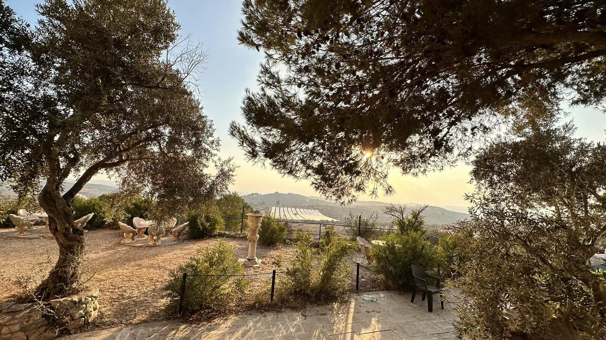
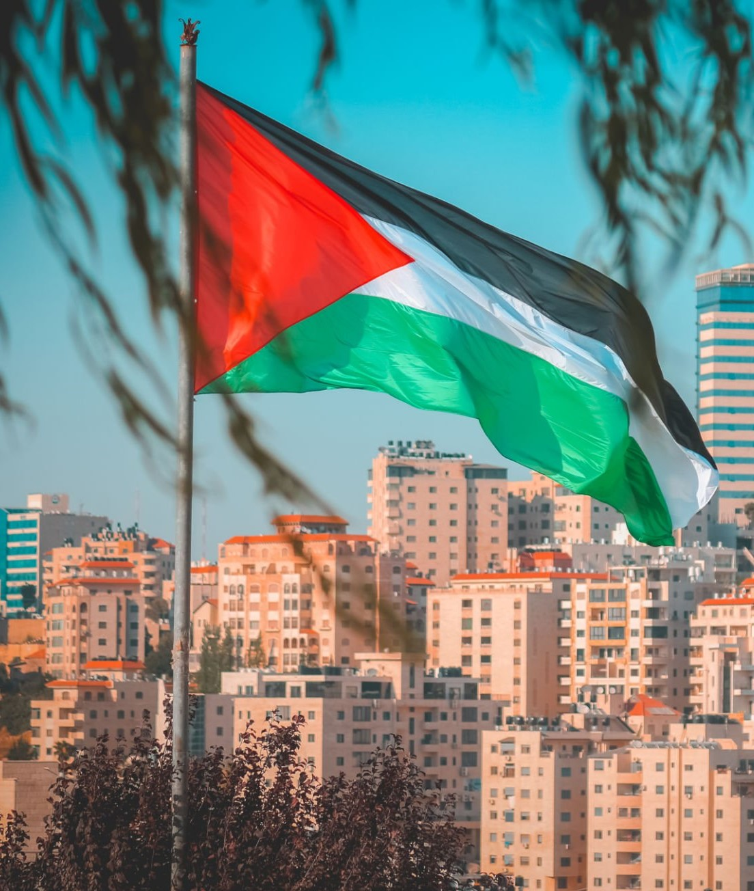
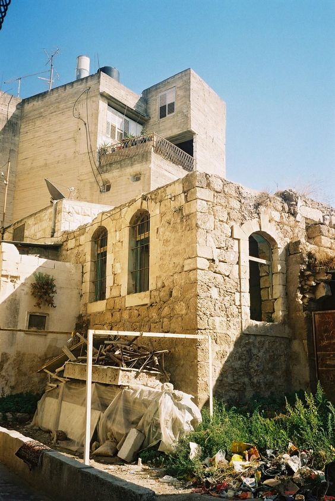
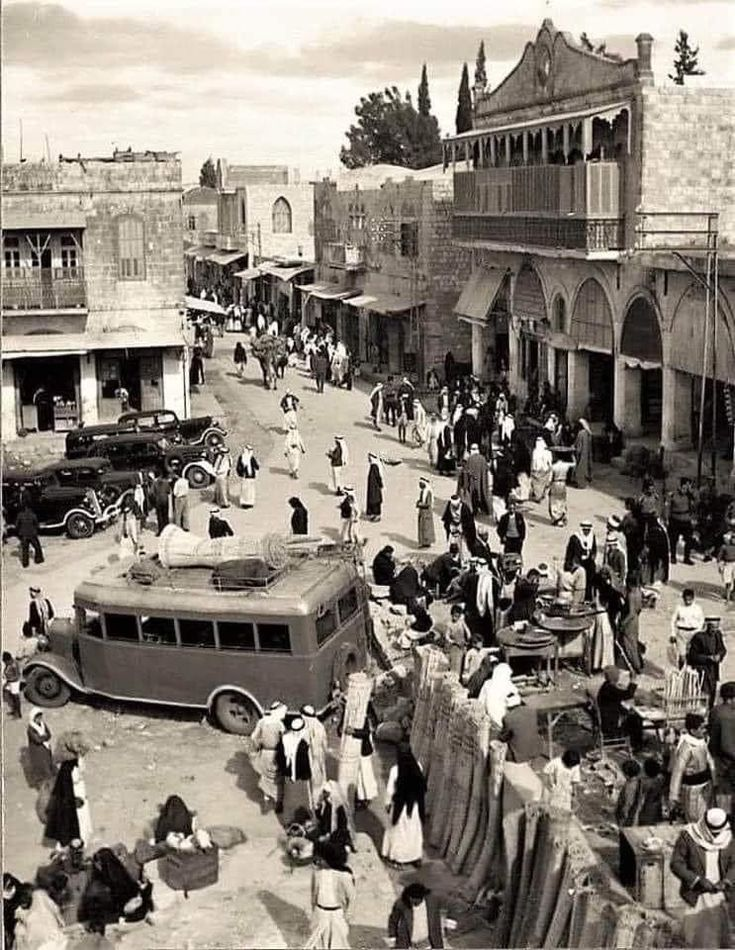

تعرف على طولكرم

طولكرم
(جبل الكرم)
"بلدتي كرُم يضاهي ألف كرم - جنة صغرى تسمى : طولكرم"

طولكرم
(مدينة الحرية)
"سلام لأرض خلقت للسلام وما رأت يومًا سلامًا"

طولكرم
روضةٌ صغرى
"كيف انسى جيرةً من خير ناس ... اخوة ، وقلوبهم ذهب وماس"
جامعة فلسطين التقنية
أو جامعة خضوري ، هي جامعة فلسطينية تقع في مدينة طولكرم ، تعد من أقدم وأبرز جامعات فلسطين ، وهي الجامعة الحكومية الأولى والوحيدة في الضفة الغربية . تأسست في مدينة طولكرم عام 1930 كمعهد يخدم عموم فلسطين والدول المجاورة ، ثم تطورت لتصبح جامعة .